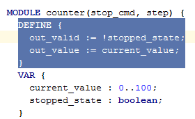

The Control + Up/Down key combination allows you to increase/decrease block selection. It ensures you always select valid subtrees of the AST. The usual Shift + Arrow keys way of text-like selection is also possible.
